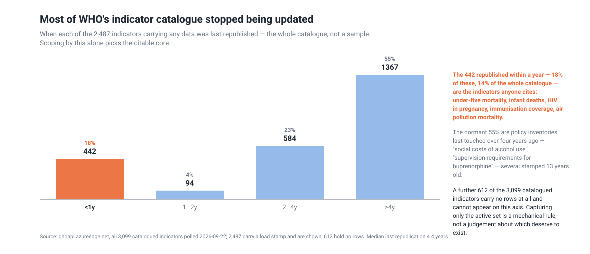
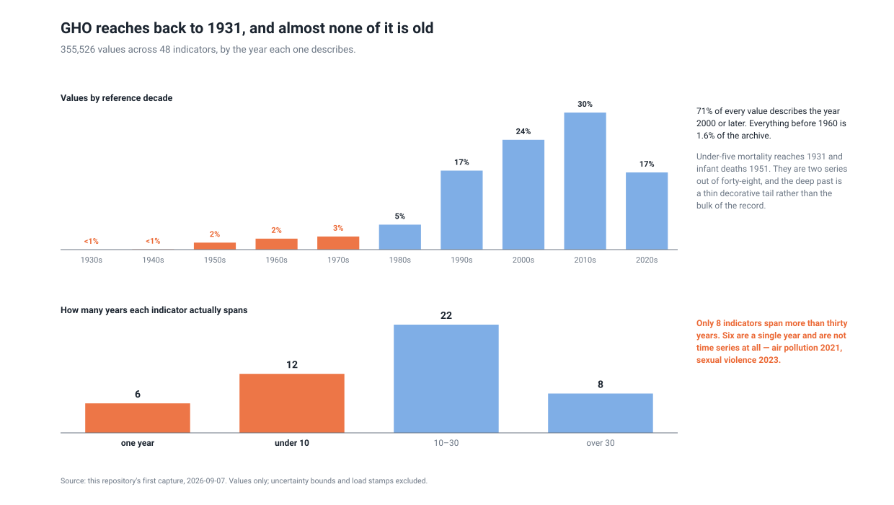
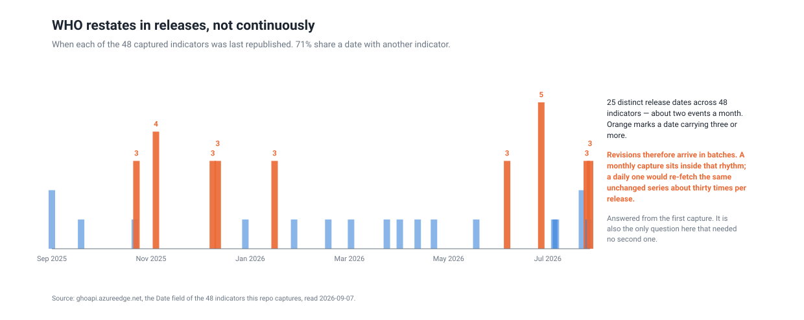
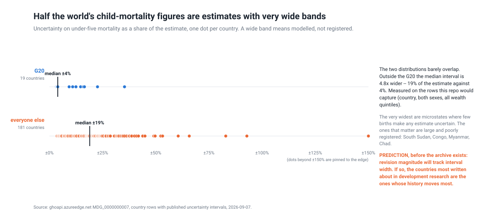
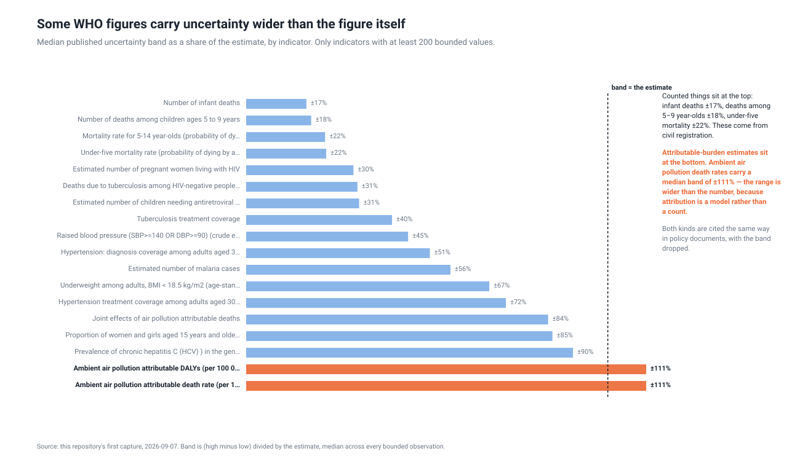
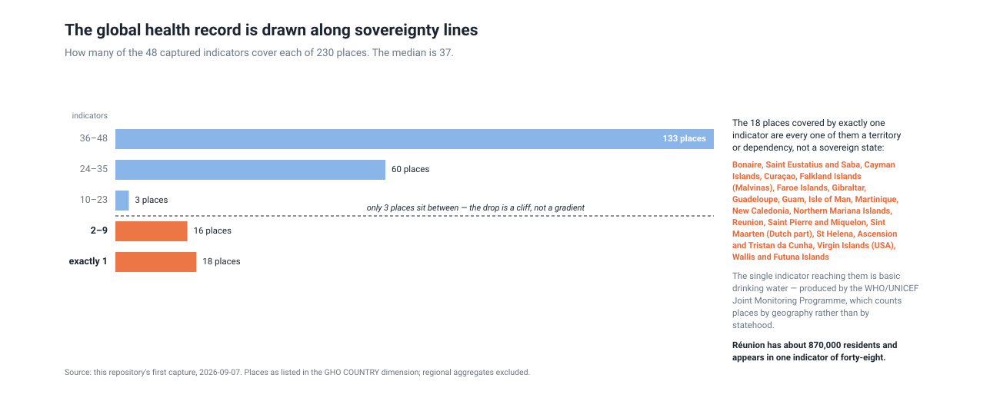

Monthly point-in-time captures of 48 actively maintained indicators from the World Health Organization's Global Health Observatory. GHO serves one value per country and reference year, and a revision overwrites the previous value in place: under-five mortality for Brazil in 1931 carries a load stamp of 5 August 2026, and whatever it said before is gone. Every published estimate is therefore uncheckable against what it used to say, including the 2015 baselines against which Sustainable Development Goal progress is measured. This dataset preserves each month's state of the series as the bytes were served, with a manifest row recording the URL, fetch time and SHA-256 of every capture. Observations are stamped with the reference year the figure describes rather than the fetch time, and WHO's own load stamp is carried as a separate metric so a restatement can be dated. Indicators were selected mechanically -- every one in a random 400-indicator sample of the 3,098 in the catalogue that had been republished within a year -- rather than chosen.
History held: 2026-09-07 to 2026-09-07.
Figures are rebuilt from the derived tables on every run; each one names the entities it is about so it can be acted on without a further query.






| source | publisher | cadence | terms |
|---|---|---|---|
who.gho.air-35 | World Health Organization | monthly | CC BY-NC-SA 3.0 IGO; see https://www.who.int/about/policies/publishing/copyright |
who.gho.air-42 | World Health Organization | monthly | CC BY-NC-SA 3.0 IGO; see https://www.who.int/about/policies/publishing/copyright |
who.gho.air-90 | World Health Organization | monthly | CC BY-NC-SA 3.0 IGO; see https://www.who.int/about/policies/publishing/copyright |
who.gho.bp-03 | World Health Organization | monthly | CC BY-NC-SA 3.0 IGO; see https://www.who.int/about/policies/publishing/copyright |
who.gho.childmort5to14 | World Health Organization | monthly | CC BY-NC-SA 3.0 IGO; see https://www.who.int/about/policies/publishing/copyright |
who.gho.cm-02 | World Health Organization | monthly | CC BY-NC-SA 3.0 IGO; see https://www.who.int/about/policies/publishing/copyright |
who.gho.cm-04 | World Health Organization | monthly | CC BY-NC-SA 3.0 IGO; see https://www.who.int/about/policies/publishing/copyright |
who.gho.gasp-isolatestested-number | World Health Organization | monthly | CC BY-NC-SA 3.0 IGO; see https://www.who.int/about/policies/publishing/copyright |
who.gho.ghed-extche-sha2011 | World Health Organization | monthly | CC BY-NC-SA 3.0 IGO; see https://www.who.int/about/policies/publishing/copyright |
who.gho.hepatitis-hbv-treatment-anc-percent | World Health Organization | monthly | CC BY-NC-SA 3.0 IGO; see https://www.who.int/about/policies/publishing/copyright |
who.gho.hepatitis-hbv-treatment-perinfected-per100 | World Health Organization | monthly | CC BY-NC-SA 3.0 IGO; see https://www.who.int/about/policies/publishing/copyright |
who.gho.hepatitis-hcv-prevalence-per100 | World Health Organization | monthly | CC BY-NC-SA 3.0 IGO; see https://www.who.int/about/policies/publishing/copyright |
who.gho.hiv-0000000020 | World Health Organization | monthly | CC BY-NC-SA 3.0 IGO; see https://www.who.int/about/policies/publishing/copyright |
who.gho.hiv-0000000023 | World Health Organization | monthly | CC BY-NC-SA 3.0 IGO; see https://www.who.int/about/policies/publishing/copyright |
who.gho.hwf-0014 | World Health Organization | monthly | CC BY-NC-SA 3.0 IGO; see https://www.who.int/about/policies/publishing/copyright |
who.gho.hwf-0017 | World Health Organization | monthly | CC BY-NC-SA 3.0 IGO; see https://www.who.int/about/policies/publishing/copyright |
who.gho.malaria-est-cases | World Health Organization | monthly | CC BY-NC-SA 3.0 IGO; see https://www.who.int/about/policies/publishing/copyright |
who.gho.malaria-imported | World Health Organization | monthly | CC BY-NC-SA 3.0 IGO; see https://www.who.int/about/policies/publishing/copyright |
who.gho.malaria-total-cases | World Health Organization | monthly | CC BY-NC-SA 3.0 IGO; see https://www.who.int/about/policies/publishing/copyright |
who.gho.mdg-0000000003 | World Health Organization | monthly | CC BY-NC-SA 3.0 IGO; see https://www.who.int/about/policies/publishing/copyright |
who.gho.mdg-0000000007 | World Health Organization | monthly | CC BY-NC-SA 3.0 IGO; see https://www.who.int/about/policies/publishing/copyright |
who.gho.mdg-0000000017 | World Health Organization | monthly | CC BY-NC-SA 3.0 IGO; see https://www.who.int/about/policies/publishing/copyright |
who.gho.mdg-0000000025 | World Health Organization | monthly | CC BY-NC-SA 3.0 IGO; see https://www.who.int/about/policies/publishing/copyright |
who.gho.ncd-bmi-18a | World Health Organization | monthly | CC BY-NC-SA 3.0 IGO; see https://www.who.int/about/policies/publishing/copyright |
who.gho.ncd-hyp-diagnosis-a | World Health Organization | monthly | CC BY-NC-SA 3.0 IGO; see https://www.who.int/about/policies/publishing/copyright |
who.gho.ncd-hyp-treatment-a | World Health Organization | monthly | CC BY-NC-SA 3.0 IGO; see https://www.who.int/about/policies/publishing/copyright |
who.gho.ntd-7 | World Health Organization | monthly | CC BY-NC-SA 3.0 IGO; see https://www.who.int/about/policies/publishing/copyright |
who.gho.ntd-bu-conf | World Health Organization | monthly | CC BY-NC-SA 3.0 IGO; see https://www.who.int/about/policies/publishing/copyright |
who.gho.ntd-lepr3 | World Health Organization | monthly | CC BY-NC-SA 3.0 IGO; see https://www.who.int/about/policies/publishing/copyright |
who.gho.ntd-lepr8 | World Health Organization | monthly | CC BY-NC-SA 3.0 IGO; see https://www.who.int/about/policies/publishing/copyright |
who.gho.rhr-npsv | World Health Organization | monthly | CC BY-NC-SA 3.0 IGO; see https://www.who.int/about/policies/publishing/copyright |
who.gho.sa-0000001518 | World Health Organization | monthly | CC BY-NC-SA 3.0 IGO; see https://www.who.int/about/policies/publishing/copyright |
who.gho.sa-0000001531 | World Health Organization | monthly | CC BY-NC-SA 3.0 IGO; see https://www.who.int/about/policies/publishing/copyright |
who.gho.sa-0000001544 | World Health Organization | monthly | CC BY-NC-SA 3.0 IGO; see https://www.who.int/about/policies/publishing/copyright |
who.gho.sa-0000001728 | World Health Organization | monthly | CC BY-NC-SA 3.0 IGO; see https://www.who.int/about/policies/publishing/copyright |
who.gho.sa-0000001730 | World Health Organization | monthly | CC BY-NC-SA 3.0 IGO; see https://www.who.int/about/policies/publishing/copyright |
who.gho.taxbev-importduties | World Health Organization | monthly | CC BY-NC-SA 3.0 IGO; see https://www.who.int/about/policies/publishing/copyright |
who.gho.taxbev-price | World Health Organization | monthly | CC BY-NC-SA 3.0 IGO; see https://www.who.int/about/policies/publishing/copyright |
who.gho.taxbev-vatspecial-lohi | World Health Organization | monthly | CC BY-NC-SA 3.0 IGO; see https://www.who.int/about/policies/publishing/copyright |
who.gho.tb-1 | World Health Organization | monthly | CC BY-NC-SA 3.0 IGO; see https://www.who.int/about/policies/publishing/copyright |
who.gho.tb-c-xdr-tsr | World Health Organization | monthly | CC BY-NC-SA 3.0 IGO; see https://www.who.int/about/policies/publishing/copyright |
who.gho.tb-rr-mdr | World Health Organization | monthly | CC BY-NC-SA 3.0 IGO; see https://www.who.int/about/policies/publishing/copyright |
who.gho.tobacco-mpower-m4-prevalence | World Health Organization | monthly | CC BY-NC-SA 3.0 IGO; see https://www.who.int/about/policies/publishing/copyright |
who.gho.tobacco-mpower-p2-smokefreeplacedetails | World Health Organization | monthly | CC BY-NC-SA 3.0 IGO; see https://www.who.int/about/policies/publishing/copyright |
who.gho.vaccinecoverage-mena-c | World Health Organization | monthly | CC BY-NC-SA 3.0 IGO; see https://www.who.int/about/policies/publishing/copyright |
who.gho.whs4-154 | World Health Organization | monthly | CC BY-NC-SA 3.0 IGO; see https://www.who.int/about/policies/publishing/copyright |
who.gho.wsh-hygiene-basic | World Health Organization | monthly | CC BY-NC-SA 3.0 IGO; see https://www.who.int/about/policies/publishing/copyright |
who.gho.wsh-water-basic | World Health Organization | monthly | CC BY-NC-SA 3.0 IGO; see https://www.who.int/about/policies/publishing/copyright |
Derived tables are CSV under data/ in
the repository; the bytes they came from are under
raw/, and SOURCES.md lists every source URL.
Every observation carries source_id and raw_ref. The
matching manifest row holds that raw_ref with the URL, the fetch
timestamp and a SHA-256 of exactly what came back, so any number here traces to
the bytes it came from.
Cite this dataset by its repository and the date you took it from: https://github.com/q3dresearch/wss-gho, accessed 2026-09-07.